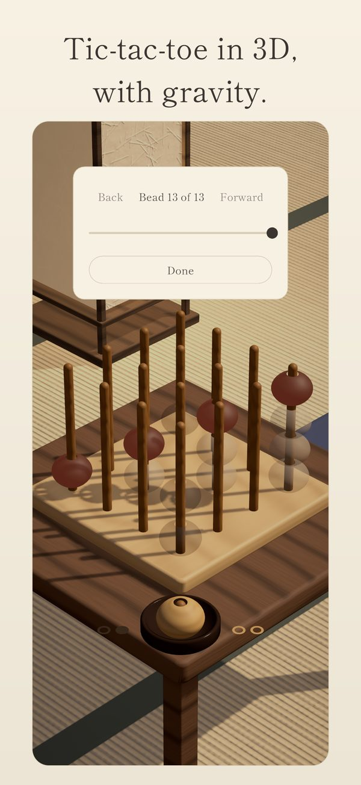
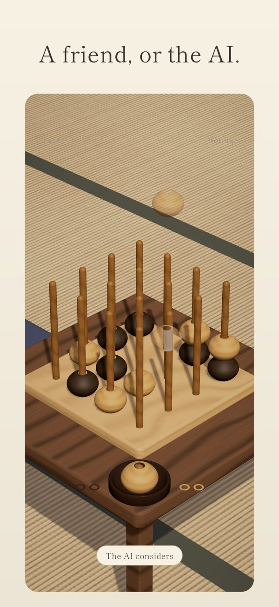
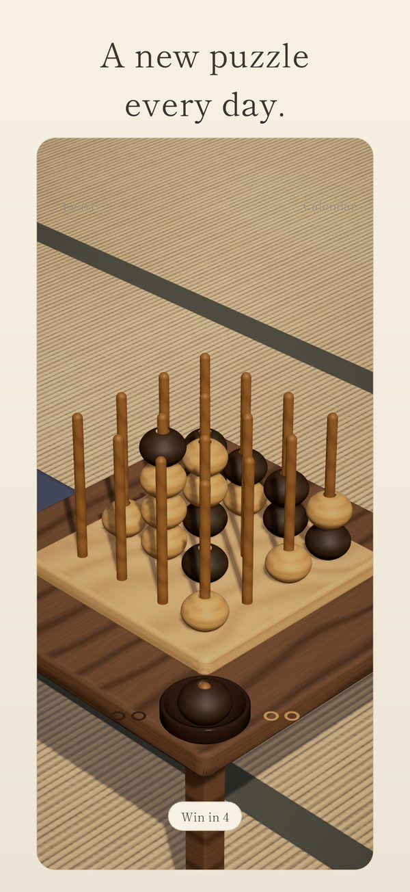

Yonmoku: 3D Four in a RowA quiet board game for two, by JJ Fisher LLC
Get Yonmoku free on the App Store
Free, with ads between games · iPhone and iPad · iOS 15 or later · Ages 4+
Yonmoku is four in a row in three dimensions. Sixteen pegs stand on a board of pale hinoki wood, four beads to a peg: a 4x4x4 cube. Players take turns dropping a bead onto any peg, where it stacks on the beads below. Four of your beads in a straight line wins: along a level, up a peg, or on any diagonal, flat, rising or through the cube. That is 76 lines to watch at once, like 3D tic-tac-toe with gravity.
Two people can pass one iPhone or iPad back and forth, or you can play the AI, which grows a little keener when you win and gentler when you lose. A new puzzle waits every day: a win to force in three, four or five beads. There is no account and nothing to buy, and it plays offline. The room is a ryokan from dusk into night: a garden, running water, and the wooden tock of a bead landing.
The name is Japanese: yonmoku, written 四目, comes from 四目並べ, the Japanese name for four in a row. This page is about Yonmoku: 3D Four in a Row, the game for iPhone and iPad. How to play has the rules, the 76 lines and five ways to think.
See it



Questions people ask
Is Yonmoku free?
Yes, and there is nothing to buy. Ads come only once you play often: after you have opened Yonmoku on two different days and finished five games, an occasional full-screen ad may appear when you tap Next game or Rematch, never after the first game of a sitting, at most one every three games and five minutes, two a sitting and four a day, and not in your first sitting back after a week away. There is never an ad during a game or in the daily puzzle. The ads are not personalized, and Yonmoku never asks to track you. Where privacy law asks for it, Google's consent form comes first and Ad privacy choices sits in Settings, and where Apple's age check applies, ads for a younger player wait until a parent approves.
Can two people play on one iPhone or iPad?
Yes, that is what Yonmoku was made for. Two players share one iPhone or iPad and pass it across, a bead each. At every handoff the camera eases back to the same home angle, so the last view gives nothing away. Play a single game or a best of 3 or 5; in a series, the loser of each game starts the next.
Can I play alone?
Yes, two ways. Choose vs. AI and the AI sits across the table: it shows where it will play, then drops its bead, and it grows a little keener when you win and a little gentler when you lose. Or open the daily puzzle: one position a day where you can force a win in three, four or five beads, gentlest on Monday and hardest on Sunday, with no timer and no streak.
Does Yonmoku need an internet connection?
No. Two-player games, the AI and every daily puzzle are inside the app, so it plays on a plane or a train. Ads load over the internet; offline, no new ad loads and the game never waits for one. If you use iCloud, your record, solved puzzles, the AI's level and achievements reach your other devices once you are back online.
Which devices can play Yonmoku?
iPhone and iPad with iOS 15 or later (iPadOS 15 or later on iPad), in portrait and in English. There is no Android version.